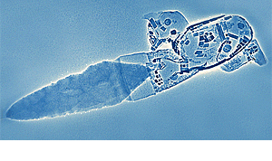
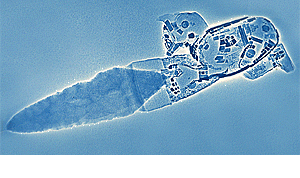

As well as optical microscopy, we have used X-radiography to investigate concealed details of the Mexican mosaics. For example, the radiograph reveals the way in which the haft of the chalcedony blade was set into the handle of the knife.
Techniques
Department
News
 
